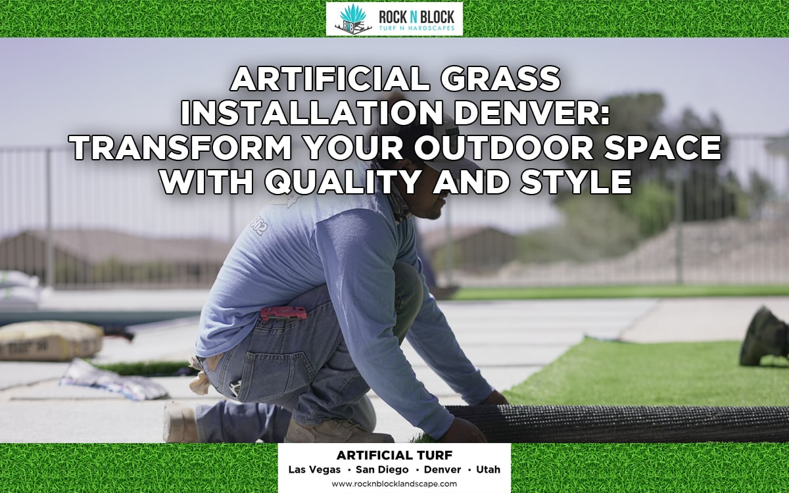

News
Understanding Polyethylene And Polypropylene Fibers
Understanding Polyethylene And Polypropylene Fibers
Exploring Nylon In Artificial Turf
Comparing Flat And Spine Fiber Shapes
Differences Between W Shaped And C Shaped Fibers
Material Properties That Influence Durability
Fiber Composition And Turf Appearance
An Overview Of Synthetic Fiber Manufacturing
Common Questions About Fiber Textures
Evaluating Polyethylene For Outdoor Use
The Role Of Material Choice In Turf Performance
Practical Insights On Fiber Thickness
How Fiber Shape Affects Surface Resilience
Evaluating Installation Complexity For Artificial Turf
Evaluating Installation Complexity For Artificial Turf
Steps To Prepare A Surface For Turf
Common Challenges With DIY Artificial Turf Projects
Potential Cost Factors When Hiring A Contractor
Observations From Homeowners Who Installed Turf Independently
Considering Equipment Requirements For Installation
Understanding The Time Commitment Of DIY Projects
Comparing Skill Levels Needed For Different Techniques
Tips For Working With A Professional Installer
Planning And Budgeting For Turf Installation
Observing Different Approaches For Seam Placement
Essential Preparations Before Scheduling Professional Services
About Us
Pet-Friendly Artificial Grass Becomes Popular Among Vegas Families

Pet-Friendly Artificial Grass Becomes Popular Among Vegas Families
Posted by on 2025-03-10
The Rise of Pet-Friendly Artificial Grass in Las Vegas
Benefits of Pet-friendly Artificial Grass for Families
How to Choose the Right Pet-Friendly Artificial Grass
Testimonials from Vegas Families Using Pet-Friendly Artificial Grass
Previous
Next